Blueprints only. Branch station/layout-workshop-20261001, built on today's live Station (75e653c). Nothing live changes, nothing is pushed, nothing is deployed. The three blueprints are real pages built from the Station's own chart, video and X panes, arranged in a different order. The deck itself was not edited. Every picture here was taken in a hidden browser at 1680×1050, 2560×1440, iPad (1024×768) and phone (390 wide) on 1 Oct between 10:10 and 10:40 New York.
"the X scrolling thing takes a ton of screen and it only shows one post and that scrolls like crazy fast… I'd like to see it like a blueprint, a workshop first. What this would look like if the Twitter tape goes as a full column at the left. That way it'll show me several posts… keep the YouTube feed about the size that it is, maybe reduce it a little. I see black space on the right and left… that gives us space for some more charts per screen. Maybe a messy chart for me, a clickable, editable chart space."
Measured on the live code served locally, scene INDEX NOW, the dock tucked (it hides until the pointer goes to the top, so the wall gets the whole height). The chart row is 1.12 of the media row's height by design.
| 1680 × 1050 | 2560 × 1440 | Where the number comes from | |
|---|---|---|---|
| Chart row | 1680 × 554 (53%) | 2560 × 760 (53%) | box of #rowTop |
| One chart, 3 on the page | 559 × 554 | 853 × 760 | pane boxes |
| One chart, 6 on the page | 559 × 277 | 853 × 380 | pane boxes |
| One chart, 8 on the page | 419 × 277 | 639 × 380 | pane boxes |
| Video pane | 840 × 495 (24% of the screen) | 1280 × 679 (24%) | pane box; half the row |
| Video picture when playing | 830 × 467 | 1157 × 651 | the player box is 840×467 / 1280×651 (the shell's bar is 28 px); a 16:9 picture inside it |
| Black each side of the picture | 5 px (1%) | 62 px (10%) | pane width minus picture width, halved. YouTube adds its own bars when the video itself is not 16:9 |
| X pane | 839 × 495 (24%) | 1279 × 679 (24%) | pane box; the shell's bar is 20 px |
| X magnification | 1.37× | 2.1× | pane width minus 16 px of padding, over X's 600 px column (the source tab is captured at 125% zoom) |
| X text size on screen | ≈ 21 px | ≈ 32 px | X's 15 px body text × magnification |
| Posts visible | 1 fully, 3 partly | 0 fully, 2 partly | X's own geometry: a text post ≈ 215 px, a post with a picture ≈ 560 px in the 600 px column, scaled |
| X scroll speed on screen | slider × 1.7 | slider × 2.6 | slider px/s × 1.25 zoom × magnification. Default 3 px/s → 5 px/s; the cap 30 → 51 px/s, which crosses a post in 6 s |
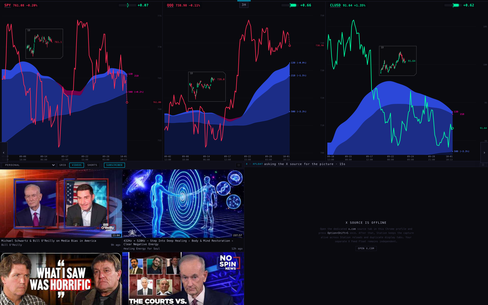
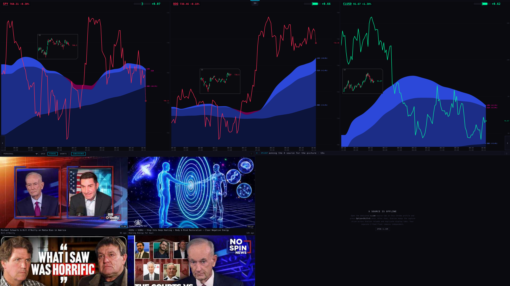
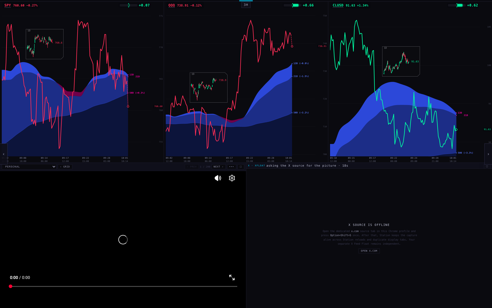
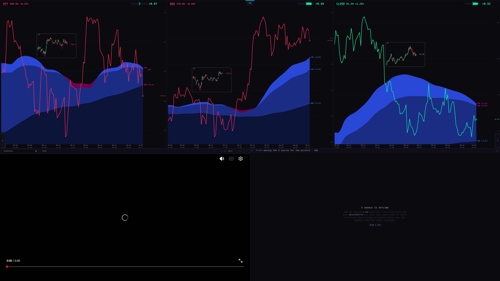
Each one is a page at blueprints/?layout=A (or B, C, today). It mounts the same shells the deck pins: /station-shells/chart-v1, /station-shells/personal-video-v1, /station-shells/x-v2. The charts and the video are live. The X shell is live too but has no capture in a hidden browser, so the column shows frames that stand for posts, drawn at X's real proportions for that column width, with the one-post-at-a-time advance and the pause under the pointer working on the frames.
| 1680 × 1050 | Today | Blueprint A |
|---|---|---|
| Charts on the page | 6 at 559 × 277 | 6 at 408 × 309 + the messy chart 509 × 430 |
| X | 839 × 495 · 1 post | 454 × 1050 · 4 posts fully, 6 partly · text 11 px |
| Video picture | 830 × 467, 5 px black a side | 715 × 402, no black |
| What gets smaller | the video picture (−14% wide), each chart (−27% wide, +12% tall) | |
| 2560 × 1440 | Today | Blueprint A |
| Charts on the page | 8 at 639 × 380 | 8 at 484 × 424 + the messy chart 939 × 590 |
| X | 1279 × 679 · 0 posts fully | 620 × 1440 · 4 posts fully, 6 partly · text 15 px (X's own size) |
| Video picture | 1157 × 651, 62 px black a side | 999 × 562, no black |
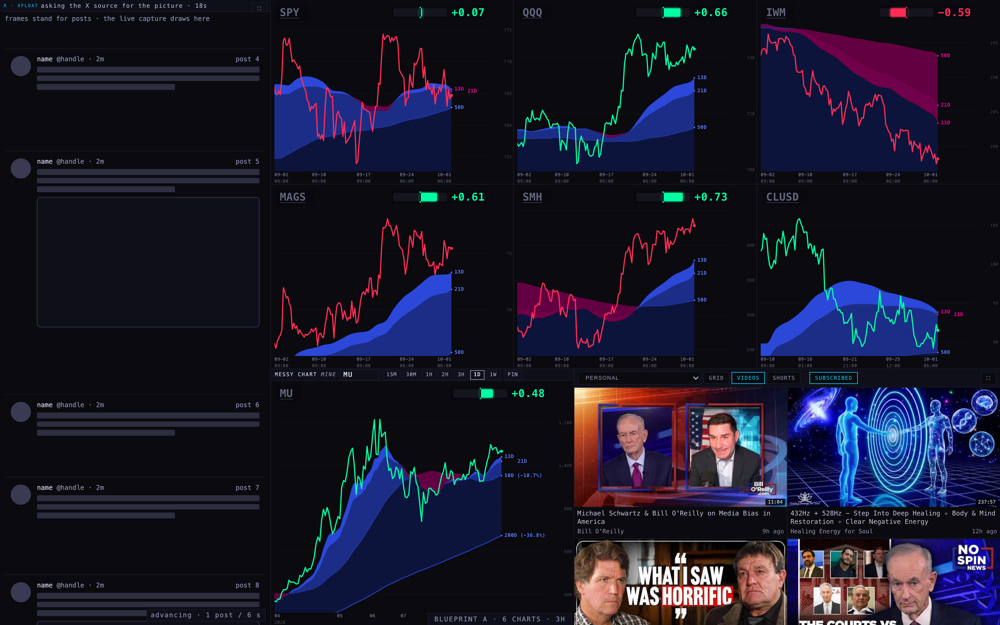
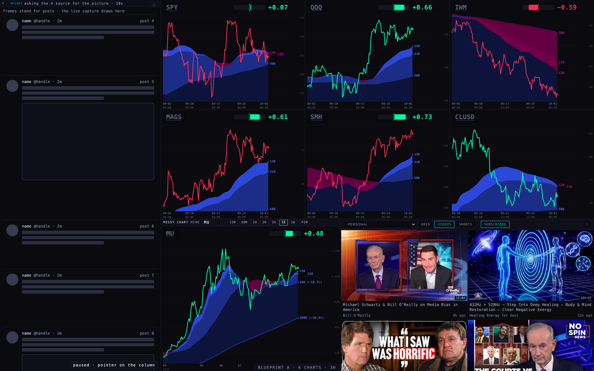
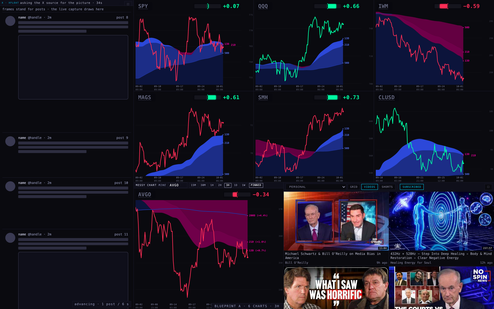
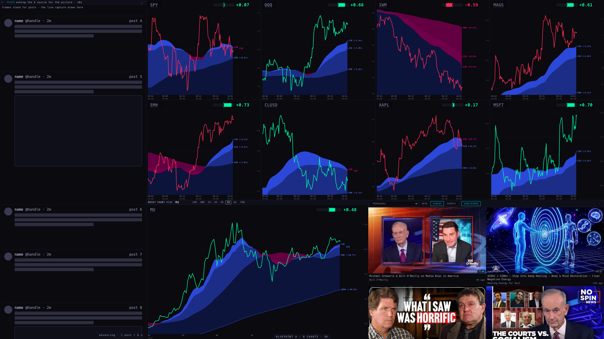
The same column, on the right. Same sizes as A at every screen. The difference is neighbourhood: in A the column sits beside the charts' left edge (where the page arrows ‹ › live today); in B it sits beside the video, and the charts start at the screen's left edge, where the eye starts.
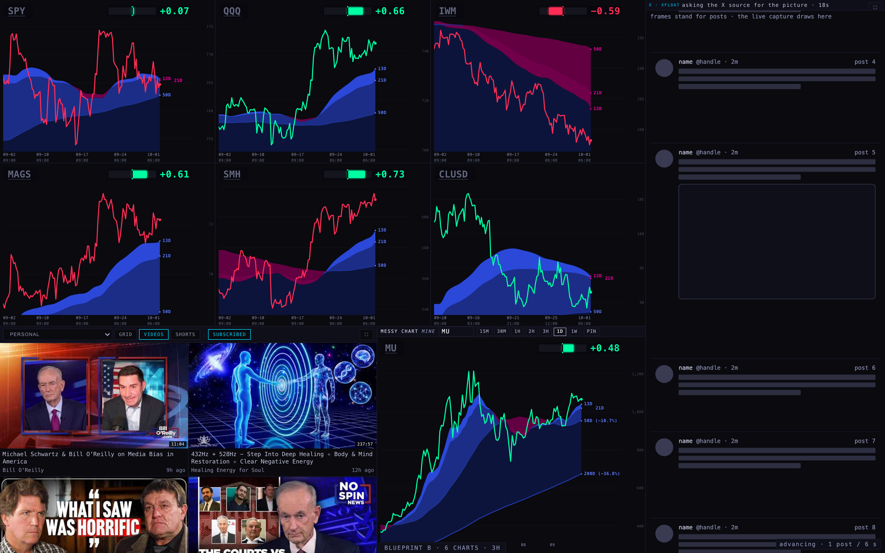
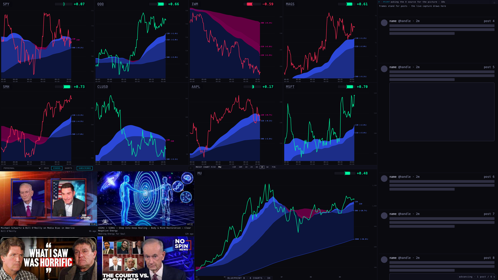
| 1680 × 1050 | Today | Blueprint C |
|---|---|---|
| Charts on the page | 6 at 559 × 277 | 5 at 391 × 525 + the messy chart as the sixth slot (391 × 525) |
| X | 839 × 495 · 1 post | 504 × 737 · 1 post fully, 3 partly · text 12 px |
| Video picture | 830 × 467 | 504 × 284, no black (−39% wide) |
| 2560 × 1440 | Today | Blueprint C |
| Charts on the page | 8 at 639 × 380 | 7 at 464 × 720 + the messy chart (464 × 720) |
| X | 1279 × 679 | 700 × 1017 · 1 post fully, 3 partly · text 17 px |
| Video picture | 1157 × 651 | 700 × 394 |
C gives the charts the most room (each chart is nearly twice as tall as today's 6-up) and keeps the video and X together in one column. It pays with the video, which is well past "a little smaller", and with fewer posts, because the column is wider than it needs to be for 11 px text and a post with a picture takes 455 px of it.
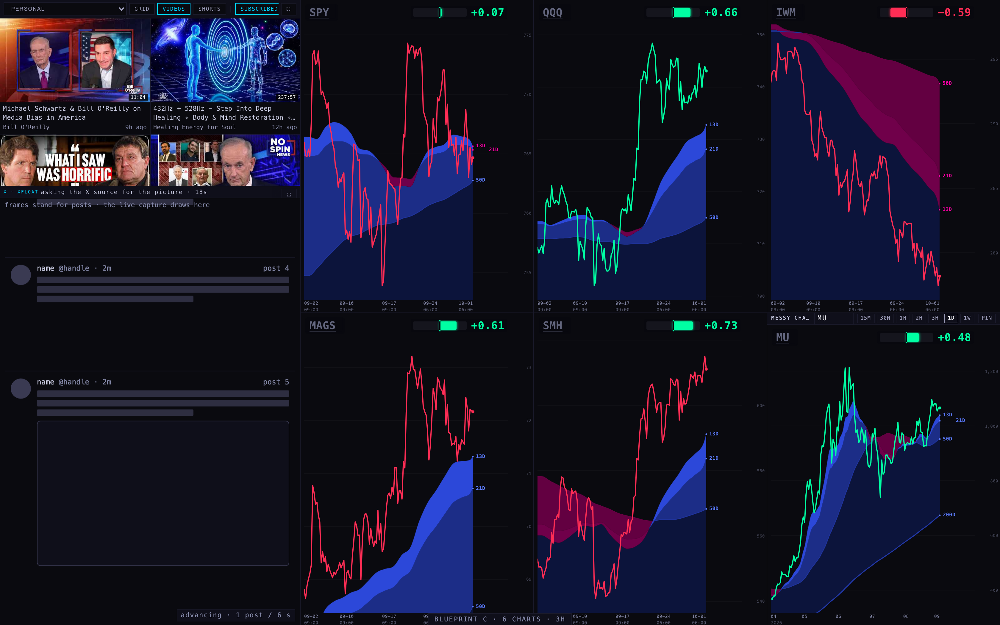
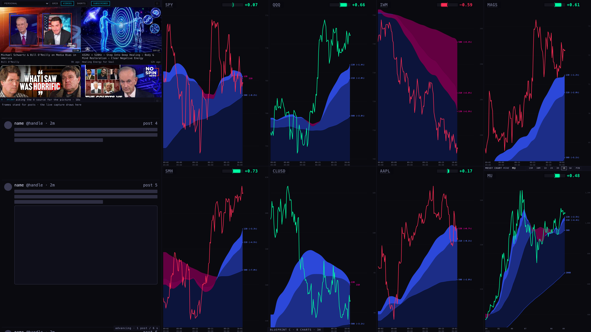
station.messy.v1, the same way the Station remembers your scene and rotation. Tested: typed AVGO, chose 3H, pressed PIN, and the browser's memory read {"t":"AVGO","range":"3H","pinned":true} with the pane loading t=AVGO&range=3H. Moving this to the shared Station state (so the iPad and the display window see the same messy chart) is a later step, not in these blueprints.iPad landscape (1024 × 768). A and B keep the column at 440 px (text 11 px, 2 posts fully visible). There is no room for a strip of two, so the messy chart becomes a chart slot and the video takes the strip alone, fitted by width (583 × 328, no black). The charts are small (194 × 195) and the messy bar overflows its 194 px slot: it needs a compact form before this could ship on iPad. C at iPad: column 480, video 480 × 270, 1 post, charts 180 × 384.
Phone (390 wide). One column that scrolls, as today: X (72% of the screen tall, 2 posts), then the charts, then the messy chart and the video. A phone is not where the column question is decided.
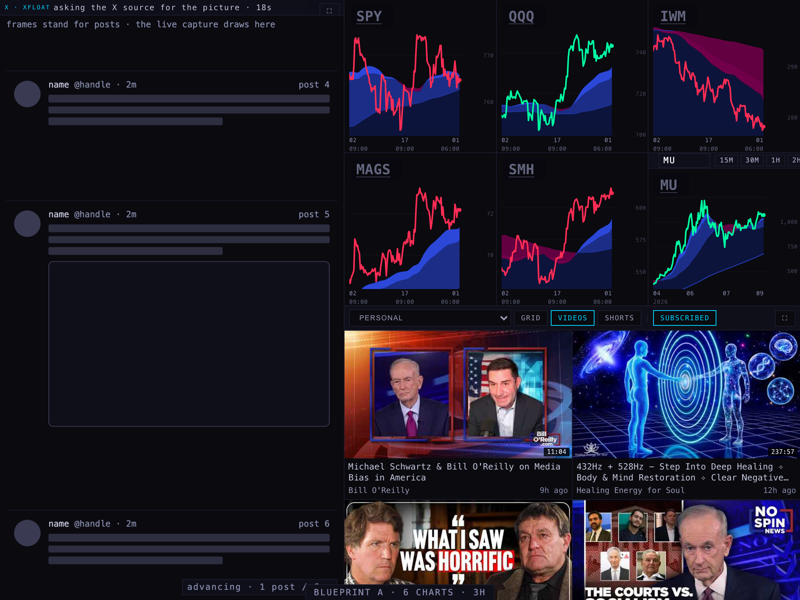
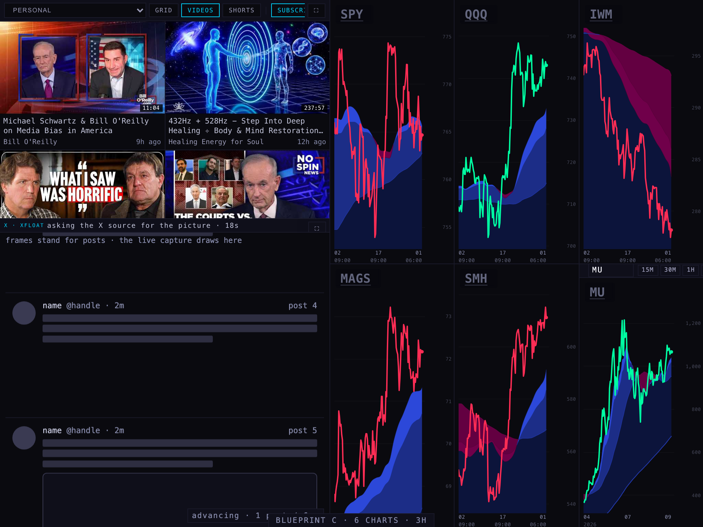
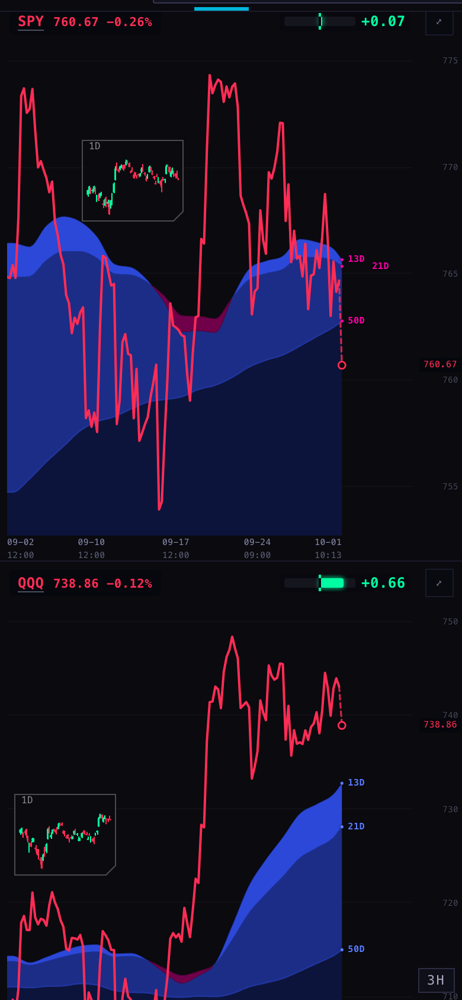
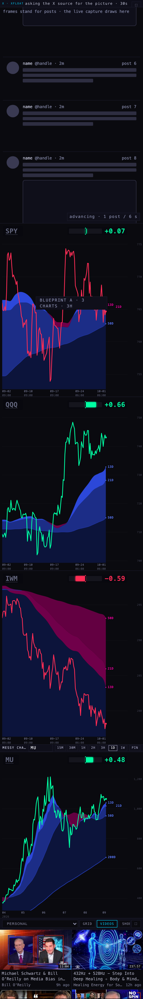
Build A. It is what you described, it gets the posts from 1 to 4, it removes the black bars at every screen, it adds the messy chart without dropping a chart, and the charts-only mode from lane S5 still works on top of it (it hides the column and the strip and gives the charts the wall). B is A with the column on the other side and costs nothing to offer as a toggle later. C is the charts-first option and would be the right one only if the video can be much smaller.
/deck, to any shell, or to anything live. No push, no deploy.node --test tests/ on the live code gave 894 tests, 875 pass, 18 fail before I started (the route-inventory and youtube-live groups, failing on dates and surfaces from previous days). My 7 new tests pass; the baseline failures remain.Harness: harness/measure.mjs (today's deck), harness/play.mjs (a video opened), harness/blueprints.mjs (every blueprint at four sizes). Numbers: harness/measure.json, harness/play.json, harness/blueprints.json. The chart API only admits scintillahub.ai as origin; the harness fetches it from node with that origin and hands it to the page, as every Station lane since 23 Sep.